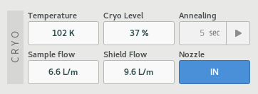
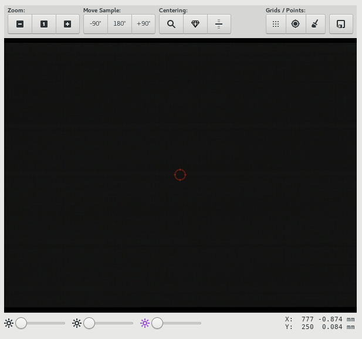
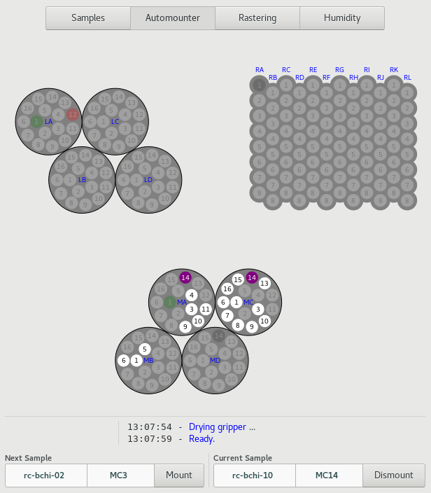
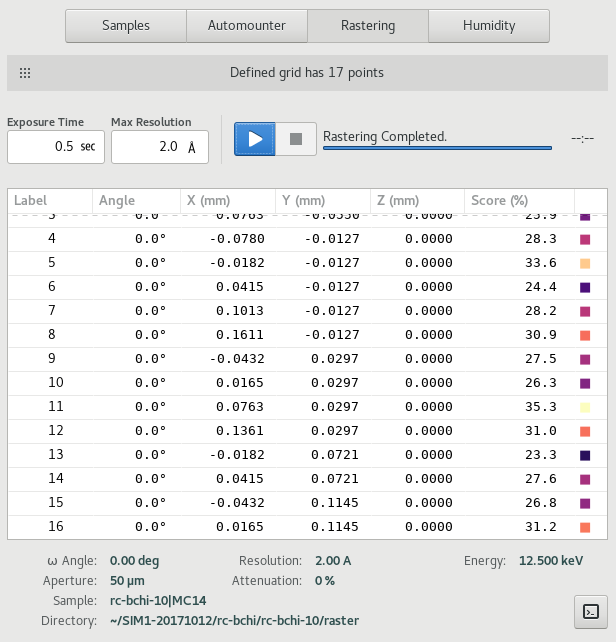
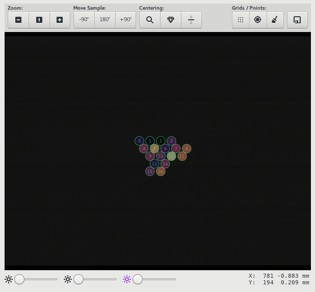
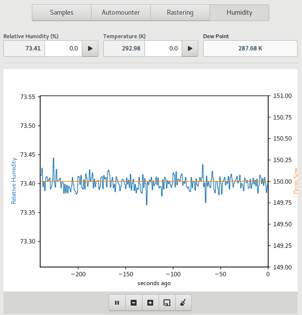

Samples¶
Table of contents
The Samples View allows users to view their list of samples, select and mount samples, center samples in the beam, perform diffraction cartography (rastering) and also control the sample environment, such as sample temperature and humidity. The features available will depend on specific capabilities of the beamline.
{kind=link}
Screenshot of the Samples View
Cryo Tool¶
The cryo parameters are shown on the top-left hand corner of the Samples View. Values shown include, temperature, flow rates, cryogen fill level. Where applicable, an annealing tool is also provided. To use the annealing tool, set the annealing duration using the entry, and click the button to start annealing. The entry will countdown the number of seconds remain in the annealing operation. The annealing operation can be stopped at any time using the same button.
Immediately to the right of the cryo tool are additional device controls such as goniometer omega rotation and beam aperture, which are often used in conjunction with the sample microscope.
Sample Microscope¶
The sample microscope provides a video display of the sample position.
At the top of the sample microscope area is a toolbar with buttons for automated centering, zooming, moving the sample, and finally, buttons for defining raster grids and saving points. Sample lighting adjustments can be made using the sliders at the bottom of the video area.
Single-click centering is only available while in Centering or Beam mode. When available, the mouse cursor changes into a pointing finger. To center at a given point, click on the point and it will be moved to the beam position (the red circle). Repeating the process at angular intervals of 90 degrees a couple of times is usually sufficient to center the sample.
Note
Single-click centering is not available while defining a grid.
Auto-centering is only availble in Centering mode. There are Four types of auto-centering operations available: loop-centering, crystal-centering, diffraction based centering and capillary centering.
The centered position can be saved by clicking on the Save Point icon on the toolbar. Saved points are annotated on the video overlay and labeled P0, P1, P2, ...
Grids: Arbitrary grids can be defined using the grid tool. To define a grid for rastering, click on the grid icon. Once activated, the cursor changes into a target crosshair. You can then define a polygon enclosing the area you want to scan. A valid polygon is a list of at least 3 points starting and ending at the same location. A line can be defined as a polygon with 3 points only. Once the polygon is defined, a raster grid will be calculated for the specified region.
Note
You must select the points either in a clockwise or counter-clockwise manner in order to obtain properly defined grids.
Points and grids can be cleared using the Clear icon on the toolbar.
Sample List¶
The sample list shows all on-site samples for the current user, as defined in the MxLIVE database. It allows you to manage mounting and dismounting of samples by name, and also allows selection of samples for automated data acquisition.

This is the recommended view for selecting samples, since the focus is on the samples and groups as defined by you in MxLIVE, rather than the location of samples in the automounter which is not necessarily familiar to you. The sample list only shows samples defined by the current logged-in user.
The columns of data shown are Selected, State, Name, Group, Port, Container, and Priority. Individual samples can be selected by activating the checkbox in the first column. The state column shows information about the state of the sample. The state allows you to distinguish between samples which are on-site but not available in the automounter, samples in the automounter, the currently mounted sample, or samples which have been marked as empty or bad within the automounter. The port identifies the automounter location of the sample, while the container column identifies the container name and location of the sample. Samples wich are not loaded into the automounter will have a blank port. These samples can only be used by manual-mounting.
Samples which have been processed, will be indicated by italics text labels on the list.
The search box at the top of the list can be used to filter the list to only samples containing the provided search terms. The selection buttons can be used to select/deselect all visible samples. The refresh button, is used to synchronize the sample information with MxLIVE.
Note
Only samples identified within the automounter, which are not empty or bad can be mounted using the automounter.
To select a sample for mounting, double-click on the corresponding row. Then the Next Sample tool at the bottom of the list will be updated to reflect the current selection, if the sample meets all required criteria. Click the mount button to initiate the mount operation.
If a sample is currently mounted, the Current Sample tool at the bottom of the list will be active, and contain the port of the mounted sample. Click the dismount button, to dismount the sample.
Note
You can mount a sample if another sample is currently mounted. The automounter will first dismount the mounted sample before proceeding to mount the selected sample. In fact, the process will be faster than attempting to carry out dismount-then-mount cycle yourself. Therefore, it is recommended to only use the dismount tool when switching to manual mounting, or at the end of your session.
Automounter Tool¶
The automounter tool shows a physical layout of containers loaded into the automounter, to allow selecting and mounting samples by automounter location.
This is not the recommended method of loading samples. Users should use the the Sample List tool to select and mount samples by name. Only samples provided through MxLIVE, or ports within containers identified in MxLIVE as belonging to the current user, and loaded in the automounter can be selected for mounting.
Hovering the mouse on an available port will display the identity of the sample at the bottom of the automounter layout. If the mouse pointer changes into a pointed finger, then clicking on the port activates the Next Sample tool, through which the sample can be mounted.
Rastering Tool¶
The Rastering tool allow users to perform diffraction cartography on mounted samples, in order to identify locations where the best diffraction can be obtained. The rastering tool is available once a grid has been defined within the sample microscope. The number of grid points is displayed at the top of the rastering tool.
To perform a run, update the exposure time and resolution settings, and click the start button. Results for each point of the raster scan are then displayed on the table, and are also overlaid on the sample miscroscope.
Humidity Tool¶
The Humidity control tool allows users to perform controlled dehydration experiments on their samples at room temperature.
.